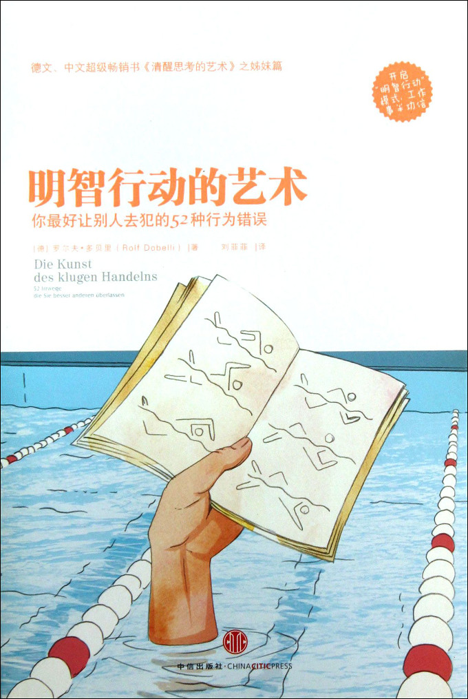

注：【】部分为笔者心得，非原文摘抄。
- 智者的目标不是获得幸福，而是避开不幸。
- 如果我们给自己的行为一个理由，就会得到更多的理解和支持。理由是否充分并不那么重要，只要有“因为”这个词就够了。
- 在所有的比较、权衡和决定之后人会感到精疲力竭。科学上称之为“选择疲劳症”，这是有害的。
- 如果血液循环中的血糖含量过少，那么意志力就会变弱。
- 你到底要选择哪个时间向总裁介绍你的项目呢？在他精力充沛时。
- 一旦有极为特殊的个体在控制分布情况，那么平均的概念就没有意义。
- 金钱上的激励会排挤掉非金钱意义上的动力。
- 如果你刚刚成立公司，在招兵买马，那么你最好先将你的公司赋予一定的意义，而不必急着用储备资金来给员工提供很高的奖金。
- 在掩饰时说得越多，其实越容易失败。
- 清晰的思想会带来清楚的表达，糊涂的思想结果只会是废话连篇。
- 如果你没有什么可说的，就什么都别说。——马克·吐温
- 信息偏倚：错误地认为掌握的信息越多，做出的决定就越好。
- 试着用最少的信息来生活，这样你可以做出更好的决定。很多信息其实没有价值的。
- 劳力辩证现象：你在一件事上投入了很多精力，便会对其结果期望过高。
- 即使你在一件事上花费了很多时间、下了很多功夫，也要保持一定距离去看待其结果，它仅仅是一个结果。
- 金融市场的成功是不可能被准确预测的。
- 期望可以改变大脑中的生物化学反应，从而改变全身的生物化学反应，这也是阿尔茨海默病（老年痴呆症）患者无法接受安慰剂疗法的原因，因为形成期望的脑区已经不能正常工作。
- 对于不能控制的事情要降低期望。
- 使自己远离不好的意外的最佳方式就是去期待意外。
- 不是所有看上去可信的逻辑都是正确的。
- 人们有这种倾向，认为一种笼统的、一般性的人格描述十分准确地解释了自己的特点，这种倾向在心理学上被称为富勒效应或巴纳姆效应。
- 志愿者最强烈的动机是共同塑造社会的民主诉求，其次是与社会接触、从中得到乐趣、获得新的经验等等。每个在志愿工作中能获得满足感的人，都不是纯粹的利他主义者。
- 【一个人的经验决定了他对一个未知事物作出具体判断的能力，但判断的过程常常受到情绪的干扰。】
- 相信通过窥探内心可以得到真相的情况被称为内省错觉。
- 越是深信不疑的事情，越是要多一些怀疑。
- 每个想象着未来情形的社会，都把重点过于集中在当前最热门的发明创造上，每个社会都低估了传统技术的作用。
- 睡眠者效应：人类对目的来源的认知要比对表达论据的认知减弱的更快。换一种说法就是，大脑忘掉信息从哪里来要比忘掉信息本身相对快一些。
- 【警惕伪装成建议的操控。】
- 选择盲目症即人们会自动忘记将其它可能的选项与眼前最好的选择进行比较。
- 竞争偏见：指的是不替有可能超过自己的人作推荐的倾向，即便拒绝帮助对方会使自己在长时间内很尴尬。
- 雇佣比自己优秀的人，否则你很快就会拥有一公司的废物。
- 邓宁-克鲁格效应，即无能的人往往无法认识到自己的无能。
- 理想的招聘方式是你将所有应聘的人集合在一起，让他们同时回答相同的问题。
- 近因效应指的是，获得的信息越晚，人们回忆得就越清楚。
- 如果产生印象后要立即作出决定，那么“最初效应”（先入为主）会其主要作用。但如果之前已经有印象，那么“近因效应”会起主要作用。
- 不要根据第一印象对事物进行判断，它肯定是具有欺骗性的。
- 理论的衰败从来都不是因为自身的错误，而是因为有另一种更好的理论出现。
- 我们会陶醉在自己的想法中。为了能够再次清醒，需要适时地保持一定的距离，回过头去审视你那些想法。
- “黑天鹅”指的是会给你的生活（或者财务状况、健康等）或给一个企业等带来意想不到的巨大影响的事情。
- 不要负债，尽可能保持谨慎地对待你的储蓄，即便在成功的时候也不要沉溺在奢华的生活中。
- 如果人们很擅长某个领域，其能力是很难延伸到另外一个领域的。
- 我们倾向于高估自己和他人的一致性，我们相信其他人的想法与感受和自己的都一样，这种思维错误被称为虚假同感偏差。
- 你要认识到你对事物的观点不是被普遍认同的，而且你还要理解和你想的不一样的人并不是白痴。你不要先去怀疑他人，而是要先去怀疑自己。
- 我们会无意识地将过去的观点调整为今天的看法，于是就避开了和自身之前的错误相碰撞的尴尬时刻。
- 对于陌生人的偏见和厌恶是生物学上的事实。对一个群体的认同感会扭曲你对事实的看法。
- 埃尔斯伯格悖论也叫做模糊不容性，指的是依照经验作出判断时，我们更喜欢已知的可能性。
- 想要清醒思考的人必须理解风险（指已知的可能性）和模糊之间的区别。
- “默认效应”以及它的特殊类型“现状偏见”都会产生这样的影响：我们有极为明显的倾向去牢牢抓住现有的事物，即使这会给我们带来不利的影响。
- 对后悔的害怕有时会使我们做出不理智的行为。为了今后不再有这种可怕的后悔感，我们倾向于保守地行动，也就是不让自己的做法太偏离常规。另外这种对后悔的害怕还会使人们不敢扔掉无用的东西，因为你担心在一些情况下这种不悦感会降临。
- 凸显效应是指一种十分显著的特征得到了比它实际应得的更多的关注。
- 表达能力好的人会赢得更多的机会。
- 重要的知识在实践中。
- 根据钱的来源不同，人们的做法也不同。钱不是赤裸裸的，而是被包在感情的外衣里。
- 为什么总会拖延一些重要的事情呢？因为在付出和收获之间有一道时间的鸿沟，要跨越这一鸿沟需要很大的精神力量。
- 自我控制力不可以持续一整天，它需要放松，需要充电，这一认识是避免拖延症的第一个必要条件。第二个必要条件是阻止分心。
- 去关注是否有人挣钱比你快是种致命的罪行。妒忌是唯一一种无法给人带来半点乐趣的感情。——查立·芒格
- 妒忌会驱使我们去战斗。
- 【面对面的沟通有助于更好地进行换位思考。】
- 注意力错觉：我们认为没有错过任何在视野范围之内发生的事情，但实际上我们只看到了自身所关注的那部分。
- 策略性虚报（职场上的大话）最适用的情况有：
- 大型的项目，没有人能承担完全责任；
- 与很多企业相关联的项目，可以互相推诿；
- 需要很多年才能完成的项目。
- 为什么项目总会发生成本超支和延期？不是因为项目没有得到经济支持，而是因为人们只注重将书面计划做到最好看。
- 要在合同中加入一项条款，规定好发生成本超支和延期的高额罚款额度，而且为了安全起见要把罚款汇到可以限制取款的账户里。
- 如果想得太多的话，就会阻碍大脑中感性的智慧。
- 专业偏见：人们了解了一些其专业领域的思维模式后，就到处试着将所有遇到的问题用这个模式来解决。
- 专业偏见的危险在于，自己专业领域的办法对解决问题不适用。
- 总裁的工作成果更取决于他坐在哪条船里，而不是他划桨的艺术。——沃伦·巴菲特
- 正面效应：存在的事物比不存在事物对我们来说意义更大。
- 事情不会仅有一个原因，而是有上百个、上千个甚至无数个原因，但我们总是试图将事情归结到一个原因上。
- 大脑对于骇人听闻的、与人物相关的、喧闹的和变换快的刺激会有极为强烈的反应，而对于抽象的、复杂的、需要解释的信息则有着极为微弱的反应。